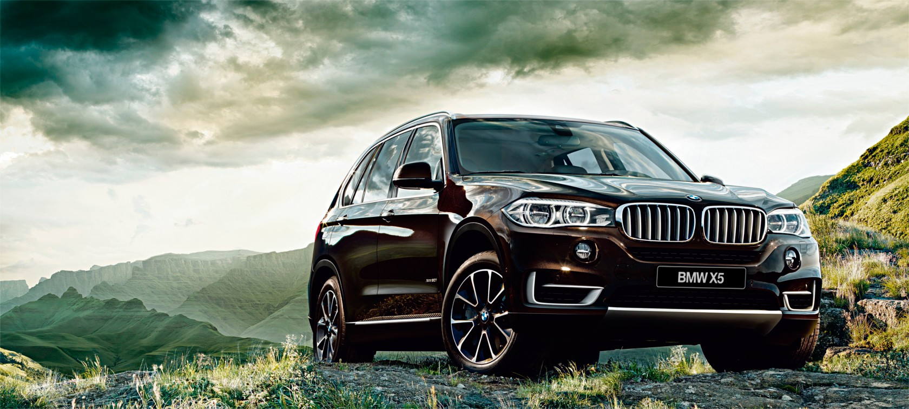

|  more images
|
The history of the X5 begins in 1994, when ideas began on a BMW sports utility vehicle after the acquisition of Land Rover. Eduard Walek was named project leader and chief engineer of the E53. Chris Chapman joined BMW Group's Designworks in California later and began working with Bangle in Munich on two full-scale clay models of the E53 for two months. By the autumn of 1996, design work was approved and the design basis for the X5 (E53) was defined, 35 months prior to production. After supplier and engineering involvement, the final design freeze was reached in the first half of 1997, with prototypes being tested from the second half of 1997. Design patents were filed on 10 June 1998 and 9 December 1998, being registered in the U.S. on 18 January 2000. |